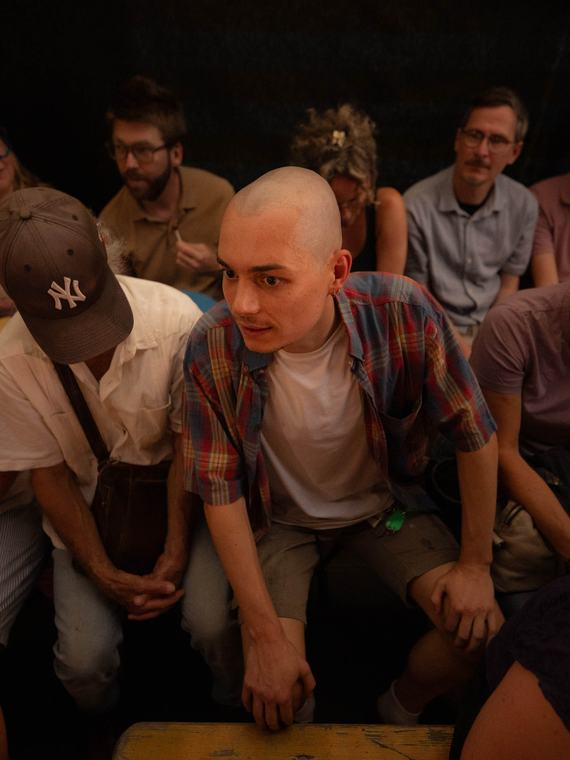
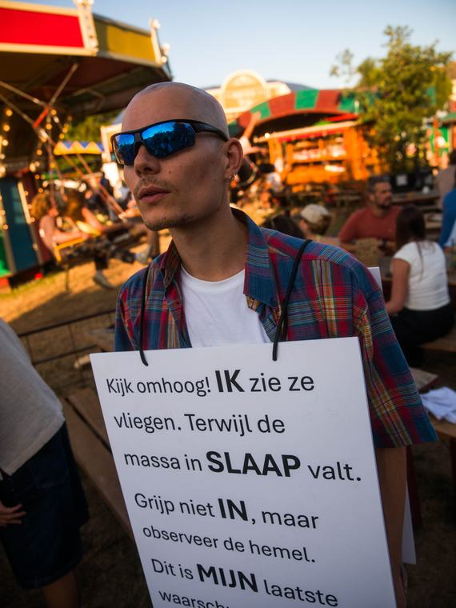
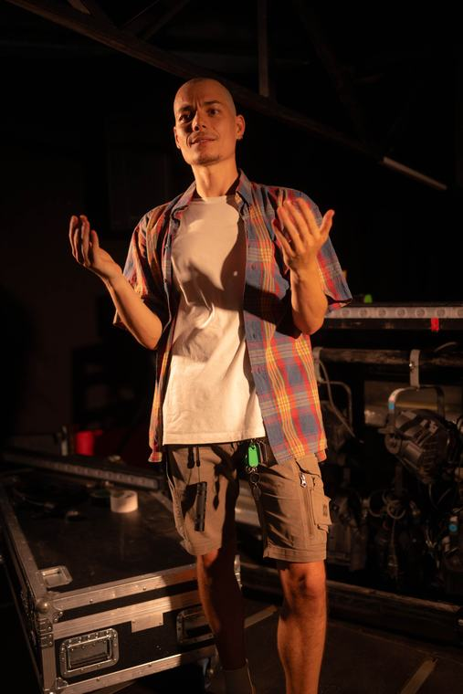

We zijn niet alleen

Неистовый панк-монолог о конспирологах. Они появляются на семейных праздниках, на автобусной остановке, обслуживают ваш столик в ресторане. Один уверен, что Земля плоская, другой — что миром правит банда пришельцев.
Лука Бётцель произносит свидетельство человека, который точно знает: они здесь. Постепенно оказывается, что инопланетная правда лежит гораздо ближе — в утрате, бездомности и классе. Взгляд в голову конспиролога и под капот нашего общества.
Спектакль шёл на передвижном театральном фестивале De Parade в Гааге, Амстердаме и Утрехте (лето 2026), начиная с Гааги — с аншлагами каждый вечер. Рецензия Хана ван Виринге в De Groene Amsterdammer.
“De tekst is op een fascinerende wijze ontregelend.”
“Een speler met lef.”
Создатели
- в ролях
- Luca Bötzel
- текст и режиссура
- Koen van Seuren
- свет
- Wout Panis
- драматургия
- Luna Joosten
- художественный куратор
- Ellen Goemans
- фото
- Niels “Knelis” Meijer
Показы
- июля 2026 De Parade, Den Haag и Amsterdam
- 14–18 авг. 2026 De Parade, Utrecht




фото: Niels “Knelis” Meijer